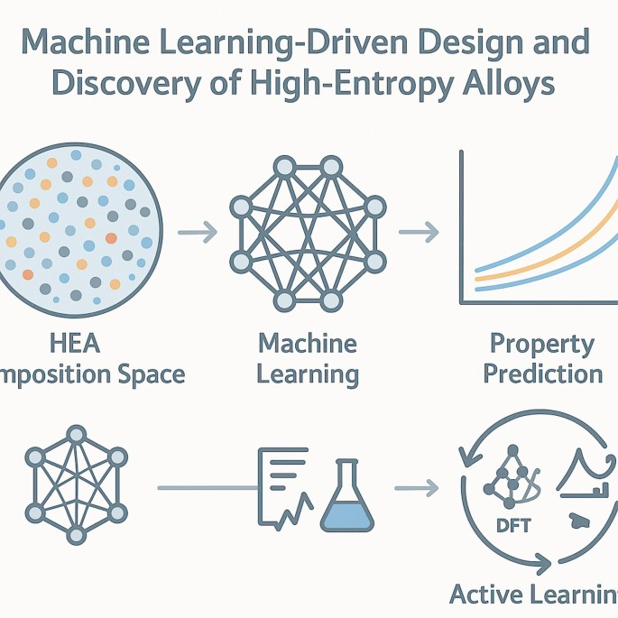

01

Machine Learning · Materials Informatics
Machine Learning for materials discovery, design, optimization, and structure–property relationships.
My research focuses on using machine learning to accelerate materials discovery and design, while uncovering interpretable structure–property relationships that provide insights into the underlying materials behavior.
Materials Informatics
Alloy Design
Explainable AI
Optimization